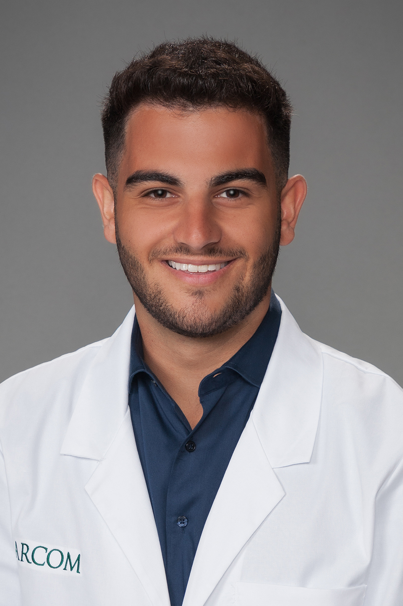
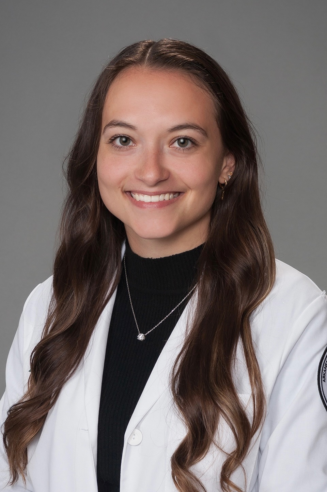
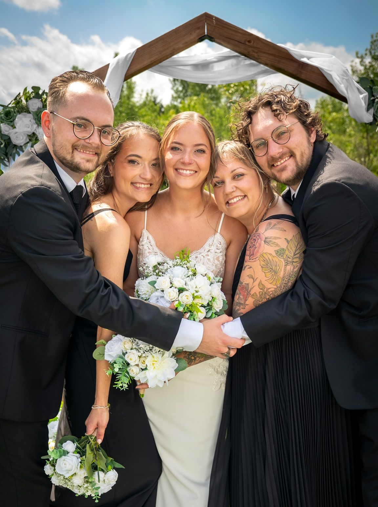
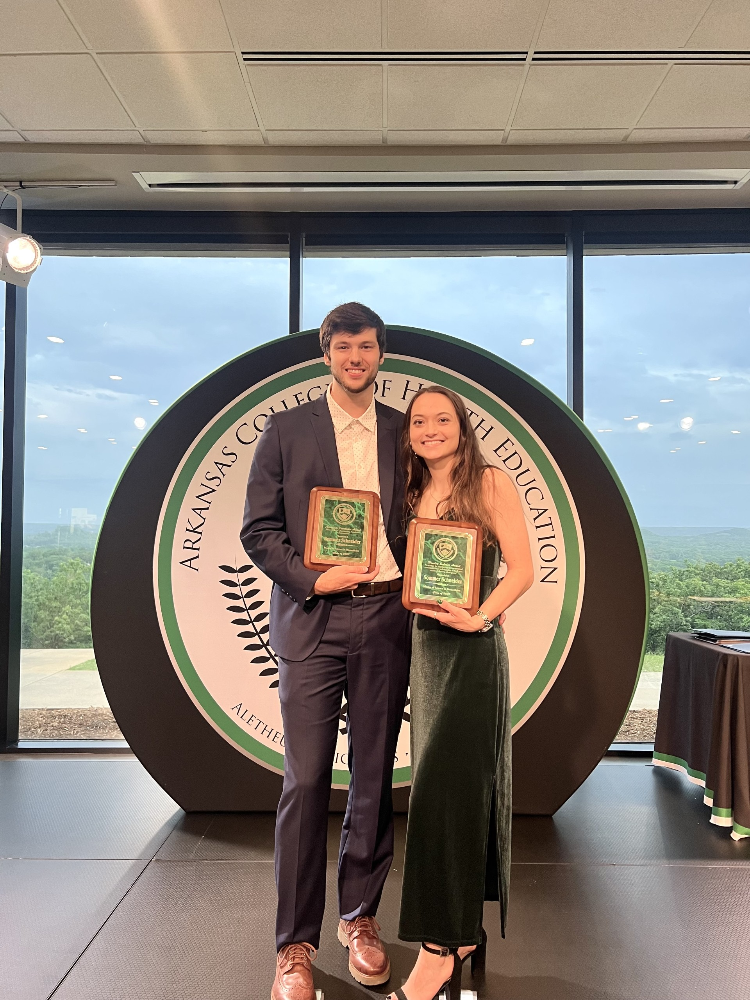
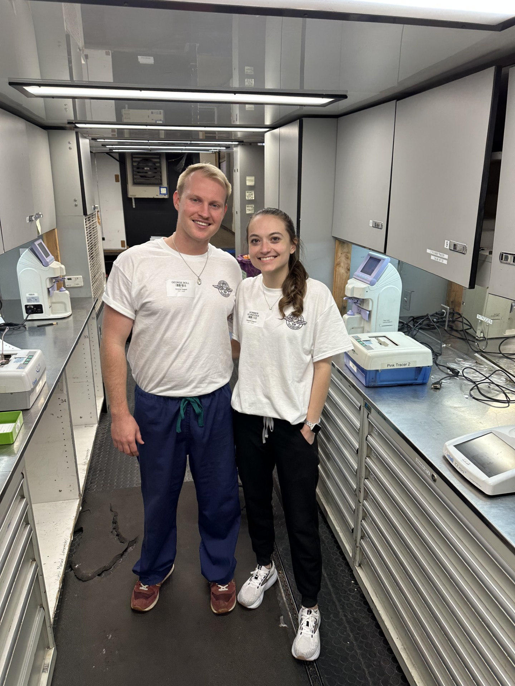
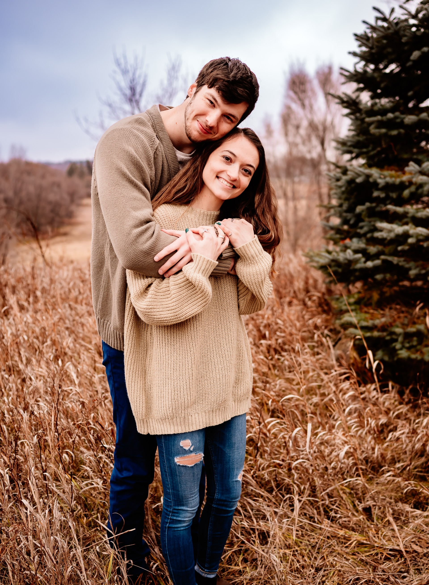
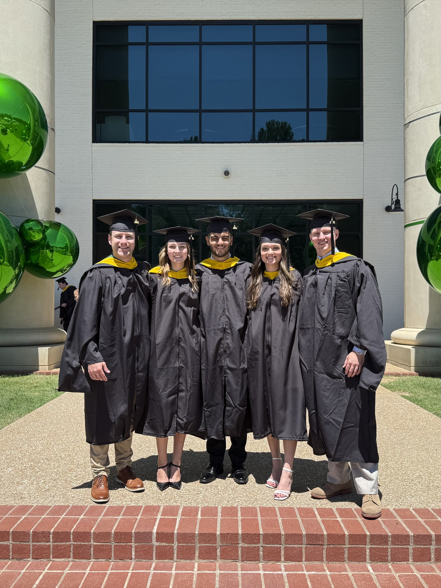

We decided to put our campaigns together as we believe strong leadership means representing every voice!
Together, we bring diverse perspectives, proven leadership experience, and established relationships with faculty to make communication clear and effective.
Our goal is to foster an inclusive, supportive environment where every student feels heard, while working side-by-side to strengthen our community and ensure our first year is the best it can be.
We have worked together in many capacities for over a year now and have proven to complement each other well!
As the President and vice president, here are some ideas we have and things we would like to implement
Giving the class a stronger voice
Anonymous feedback to faculty thought the semester
Suggestions to SGA
Who do I talk to when I have a question about ______
An ARCOM specific question bank for us moving forward and for future students
Taking the Exam Question Writers to the next step
A question bank site to access for all students where you can search by topic, think of a mix of Texas tech and Lecturio
Advancement lecture series:
3&4th year students, residents, faculty, and more
What I wish I had known
How to best prepare
How to get involved
Who do I talk to if…?
Class wide volunteer opportunity
One for the entire class
More communication when clubs have volunteer opportunities with more openings
TBL improvement
Lamps
Spray bottles for white boards, Microfiber towels
HDMI Cords
Why Vote for Antonio

Why Vote for Sommer

About Sommer
Hi, I am Sommer. I was born and raised in West Bend, Wisconsin - a town about an hour north of Milwaukee.
I grew up in a large family, being the youngest of 5 siblings!
Although I now live far away, my siblings and I are still close!
I also have two cute little nieces that are 2 and 5 years old!
I went to West bend East high school, where I played volleyball, basketball and track.
I still enjoy playing volleyball once a week! I graduated from high school in 2019.
For undergrad I went to the University of Wisconsin Milwaukee, where I majored in Biology and got a minor in chemistry.
During my breaks from school, I worked at a Parks department for the city I grew up in, where I actually worked with some of my siblings.
In college, I was involved with many clubs and spent my free time volunteering at a free clinic and as a tutor/mentor for young girls at a local community center.
Additionally, I did research working with zebrafish looking at MYH genes involvement in development, and how specific mutations in these genes alter development. I graduated From UWM in December of 2022.
After graduating, I worked as an EKG tech at a hospital in Milwaukee for a few months.
Then, in July of 2023 year, my boyfriend, Dalton, and I moved to Fort Smith with our two cats, Buddy and Missy.
Dalton works as a software engineer and made this website. That August, we got our first dog, Bailey.
Then a year later, in July of 2024 we decided one crazy dog wasn't enough and got another puppy, Bear. They are both German Shorthaired Pointers.
Yes, they do hunt, but there are not a lot of upland birds around here so we can really only go hunting with them when we go back to Wisconsin.
In July of 2024, I started the MSB program at ACHE and it was the best decision I have ever made!
I feel that it truly prepared me for the rigor of medical school and gave me a good foundation.
I also met some great friends, one of them being Toni! Toni and I spent a lot of time in TBLs together studying as well as going to events, such as the RAM clinic, together.
We have found that we complement each other well and make a good team!
Now at ARCOM I am so happy with my decision to stay in Arkansas!
I am not sure what I want to specialize in, I have a very open mind to most things.
I have always had an interest in pediatrics, but a lot of specialties sound interesting to me, so I don't want to make my mind up yet!
None of us have much of it, but in my free time I like to go on bike rides, play with my dogs, and play video games with my boyfriend.
I also enjoy reading; I actually reread all the Hunger games books this summer and thought it was very interesting reading it with a different perspective as an adult!





About Antonio
Hello! I am Antonio, but people call me Toni. I was born in Brazil, and moved to Houston, TX in 2013 with my mom, dad and younger brother.
He is currently studying Aeronautical Sciences at Embry-Riddle University and wants to work as a commercial airline pilot in the future.
I also have a lovely girlfriend, Isabella, who went to the same undergrad university, which is where we met.
She is an extremely talented artist who is currently working with interior design and event planning in Dallas.
I went to the University of Dallas in Irving, Texas where I played collegiate soccer for 4 years and gained a lot of experience with leadership through the Student Athlete Advisory committee (SAAC).
During those 4 years I worked alongside the university board to enhance the student athlete experience and make sure that every voice was heard by meetings with the university president, deans and other faculty members.
After that, I came to Fort Smith and started here at ACHE in the MSB program last year.
During that time, I met some lifelong friends like Sommer, George, Charlie and Cooper.
While working through the MSB program here at ACHE, I was introduced to many different experiences that allowed me to grow and become an even more effective leader, like attending the RAM clinic last year as a patient translator, and organizing events for the class to clean the anatomy lab when our dissections were done at the end of the year.
I am also a part of the ACHE soccer team, ACHES AND PAINS and we play in a league here in Fort Smith against other local teams.
During my time in the MSB program and carrying over into the DO program, I have spent a lot of time with Sommer, and we have learned a lot about the needs of our program and ACHE.
We have worked very well together in the past and I am sure that if we are elected as your SGA representatives our ideas as a class will come to fruition.
If you have any questions, please feel free to come up and chat! I love hearing about your ideas and your perspectives and what I could do to make your experience even better here at ARCOM!